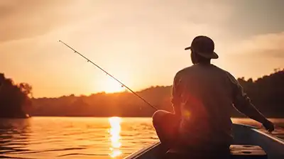

Pure fishing, a guide to fishing with facts
Facts and the history of fishing

Fishing has evolved from a primal survival tactic into a sophisticated multibillion-dollar global pastime, with its roots stretching back over 40,000 years to prehistoric bone hooks and silk lines used in ancient China. The transition from necessity to sport was solidified in the 17th century by Izaak Walton’s The Compleat Angler, which framed fishing as a philosophical pursuit of patience and nature. This historical foundation eventually gave way to the industrial era's breakthroughs, such as the 1810 invention of the multiplying reel and the mid-20th-century development of nylon monofilament, which replaced cumbersome horsehair lines. Today, this legacy lives on through high-performance products like Shimano spinning reels and St. Croix graphite rods, which utilize aerospace-grade materials to provide sensitivity ancient anglers could only dream of. Modern gear also incorporates cutting-edge electronics, such as Garmin sonar systems that track fish in real-time, and fluorocarbon lines that are scientifically engineered to be invisible underwater, blending centuries of tradition with the pinnacle of modern engineering.
Beyond its role as a survival skill, fishing is a global pillar of ecological and economic health, providing the primary protein source for over three billion people and supporting millions of livelihoods. It acts as a vital bridge to conservation, as recreational license fees and equipment taxes provide the majority of funding for habitat restoration and waterway protection. On a personal level, the sport serves as a powerful "blue space" therapy, proven to reduce stress hormones and improve cognitive focus through a unique combination of physical patience and environmental immersion. By maintaining the balance of aquatic food webs and driving billions in annual commerce, fishing remains one of the most significant ways humanity interacts with and preserves the natural world.
Source for this text
Why is fishing so important?
- Fishing provides a powerful "blue space" therapy that reduces stress and improves mental clarity by immersing the mind in a meditative, natural environment.
- Fishing is a global pillar of food security and conservation, providing essential protein to billions and funding the protection of waterways through license fees and equipment taxes. Economically, it supports millions of livelihoods and drives a multibillion-dollar industry that incentivizes the preservation of aquatic habitats. Beyond the numbers, it offers vital mental health benefits, acting as a "blue space" therapy that reduces stress and strengthens our psychological connection to the natural world.
Location
YouTube's headquarters901 Cherry Ave, San Bruno, California, 94066
Call us at 385-392-6364